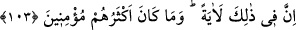
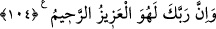
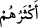

yerinde kullanılmıştır. Çünkü ikisi de olmayanı takdir ve farz etme anlamında
birleşirler. Sanki denilmiştir ki: “Keşke bizim için dünyaya tekrar bir daha dönüş
olsaydı”
“Mü’minlerden olsaydık.” Temennînin cevabıdır. Bu bir üzülme ve hasret çekme
ifadesidir. Onlar dünyaya tekrar döndürülecek olsalar, kendilerine yasaklananlara geri
dönerlerdi. Çünkü Allah kimi saptırırsa, dünyaya defalarca dönse bile artık onu
hidâyete erdirecek yoktur.
Dünyadaki ümmetleri görmez misin? Allah Teâlâ, onları nasıl defalarca sıkıntı ve
zorluklarla yakalamış/cezalandırmış, sonra ferahlık vermiş, fakat onların sadece
günahlarda ısrarı artmıştır. Allah Teâlâ bizi ve sizi yüz çeviren gafillerden değil
nasîhatı dinleyen ve ibret alanlardan kılsın.
103. Bunda elbet (alınacak) büyük bir ders vardır; ama çokları iman etmezler.
“Bunda” yâni İbrâhim (a.s.)’ın kavmi ile olan kıssasında “elbet (alınacak) büyük bir
ders vardır” Allah’tan başkasına tapanlar için bir ibret vardır. Böylece o kimse bilsin
ki âhirette ondan uzak durulur, hiç kimse ona şefaatte bulunmaz. Özellikle de İbrâhim
(a.s.)’ın dîni üzere olduklarını iddia eden Mekkeliler için...
“Ama çokları” İbrâhim (a.s.)’ın kavminin çoğu, Kureyş’in çoğunun durumunda olduğu
gibi “iman etmezler.” Rivâyet edildiğine göre İbrâhim (a.s.)’a Bâbil halkından sadece
Lût ve Nemrud’un kızı îman etmişti.
104. Şüphesiz Rabbin, işte O, mutlak galip ve engin merhamet sahibidir.
“Şüphesiz Rabbin, işte O, mutlak galip” müşrikler üzerine galebe eden, satvet ve
kudreti reddedilemez olan O’dur. “Ve engin merhamet sahibidir.” O öyle bir
bağışlayıcıdır ki, kullarının tevbesini geri çevirmez ve delilsiz onlara azap göndermez.
Geniş rahmeti sebebiyle belki onlar yahut zürriyetlerinden biri îman ederler diye
Kureyş’e verdiği gibi mühlet verir. Fakat asla ihmâl etmez. Çünkü her amel işleyene
ameline karşılık mutlaka hayır ise hayır, şer ise şer olarak karşılık vermek gerekir.
“
”deki zamirin Peygamberimiz (s.a.)’in kavmine âid olması da câizdir. Çünkü
onlar ibret alsınlar ve îman etsinler diye âyetin kendilerine okunduğu kimselerdir. Bu
mesele önceki âyetlerde açıklandı. Oraya müracaat et.
el-Bahr’da der ki: “Nefis kötülüğü, yani inkarı çok emretme tabiatında yaratılmıştır.